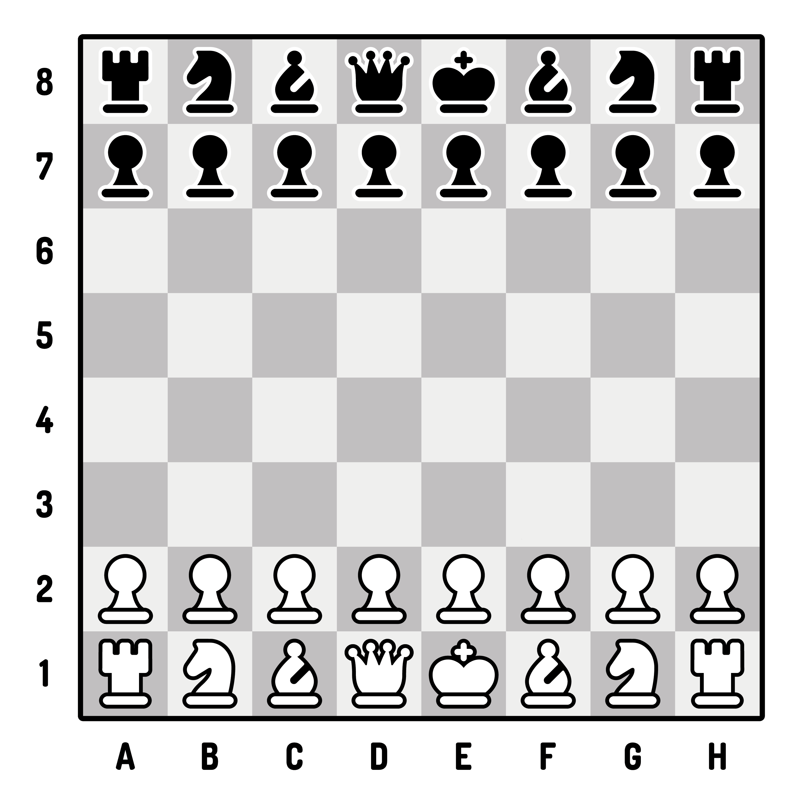

A game of chess involves two player, white and black. Each player controls sixteen pieces: 8 pawns, 2 rooks, 2 knights, 2 bishops, 1 queen, and 1 king. At the start of the game the chess board is setup as follows
As seen in the board above, chess boards are labeled per row and column; columns are labeled from a-h and rows are labeled from 1-8. This makes each square have its own label, for example, the white king, at the beginning of the game, is located at e1.
Chess matches are generally timed. The most common time control nowadays is 10 minutes for each player, a close second being 5 minutes. There are other time controls such as 15 | 10, each match lasting 15 minutes, however, each move adds 10 seconds.